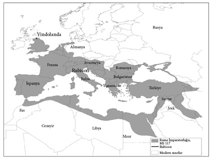
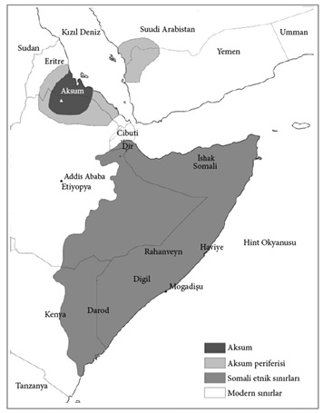

6

Uzaklaşma
Venedik’in bir müzeye dönüşmesi
Venedik’i oluşturan adalar topluluğu Adriyatik Denizi’nin en kuzeyinde yer alır. Ortaçağ’da Venedik, yeni yeni gelişmeye başlamış siyasal katılımcılığın desteklediği bir dizi kapsayıcı ekonomik kurumla, muhtemelen dünyanın en zengin yeriydi. Bağımsızlığını MS 810’da elde etti; sonradan bunun şanslı bir tarih olduğu ortaya çıkacaktı. Roma İmparatorluğu’nun çöküşüyle yaşadığı gerilemeden mustarip Avrupa ekonomisi toparlanıyordu ve Charlemagne gibi krallar yeniden etkili siyasal merkezi güçler oluşturuyordu. Bu durum istikrara, daha fazla güvenliğe ve ticaretin genişlemesine yol açtı ki, Venedik bundan istifade edebilecek benzersiz bir konuma sahipti. Akdeniz’in tam ortasında bulunan bir denizciler ülkesiydi. Doğu’dan baharatlar, Bizans malları ve köleler geliyordu. Venedik zenginleşti. 1050’ye gelindiğinde Venedik en az 100 yıldır ekonomik bir genişleme içindeydi ve 45 bin kişilik bir nüfusa sahipti. Bu, yüzde 50’lik bir artışla 1200’de 70 bine ulaştı. 1330’da nüfus bir yüzde 50 daha arttı ve 110 bine ulaştı; Venedik artık Paris kadar büyüktü ve muhtemelen Londra’nın üç katı boyutlarındaydı.
Venedik’in ekonomik genişlemesinin temel dayanaklarından biri ekonomik kurumları çok daha kapsayıcı hale getiren, sözleşmelerle ilgili bir dizi yenilikti. En ünlüsü, anonim şirketin iptidai bir biçimi olan ve yalnızca tek bir ticari misyon için kurulan commenda idi. Bir commenda iki ortaktan oluşuyordu; Venedik’te kalan bir “sabit” ortaktan ve bir de seyahat edenden. Sabit ortak girişime sermaye koyar, seyahat edense kargoya eşlik ederdi. Genellikle sermayenin aslan payını koyan sabit ortak olurdu. Böylece, servet sahibi olmayan genç girişimciler tacirlerle seyahat ederek ticarete atılabilirlerdi. Bu dikey sosyal hareketlilik için önemli bir kanaldı. Yolculuk esnasında meydana gelen her türlü zarar ortakların koyduğu sermayeye göre bölüşülüyordu. Yolculuk para kazandırırsa kâr hesabı iki tip commenda sözleşmesine göre yapılıyordu. Eğer commenda tek taraflıysa, tüm sermayeyi sabit ortak koyuyor ve kârın yüzde 75’ini alıyordu. Eğer iki taraflıysa, sabit ortak sermayenin yüzde 67’sini koyuyor ve kârın yüzde 50’sini alıyordu. Resmi belgeler incelendiğinde commenda’nın dikey sosyal hareketlilik için ne denli güçlü bir dayanak oluşturduğu görülebilir: Bu belgeler, önceden Venedik elitine dahil olmayan yeni isimlerle doludur. MS 960, 971 ve 982’ye ait resmi belgelerde yer alan yeni isimlerin kayıtlı tüm isimlere oranları sırasıyla yüzde 69, yüzde 81 ve yüzde 65’tir.
Ekonomik kapsayıcılık ve ticaret yoluyla yeni ailelerin yükselişi siyasal sistemi daha da açık olmaya itti. Venedik’i yöneten doç, Genel Meclis tarafından ömür boyu görevde kalması için seçiliyordu. Genel Meclis her kesimden yurttaşlar tarafından oluşturulsa da pratikte güçlü ailelerin oluşturduğu çekirdek bir grubun kontrolündeydi. Doç çok güçlü olsa da, siyasal kurumlardaki değişikliklerle zamanla gücü yavaş yavaş azaldı. 1032’den sonra doç yeni oluşturulan ve işi doçun mutlak güce ulaşmasını engellemek olan bir Dükalık Konseyi’yle birlikte seçildi. Bu konseyin sınırlama getirdiği ilk başkan Domenico Flabianico daha önce önemli bir makam işgal etmemiş bir aileden gelen varlıklı bir ipek taciriydi. Bu kurumsal değişimi Venedik’in ticaret ve deniz gücündeki muazzam genişleme izledi. Venedik 1082’de Konstantinopol’de kapsamlı ticaret imtiyazları elde etti ve şehirde bir Venedik Mahallesi (Venetian Quarter) kuruldu. Kısa süre içinde bu bölgeye 10 bin Venedikli yerleşti. İşte burada kapsamlı ekonomik ve siyasal kurumların birbiriyle koordinasyon içinde çalışmaya başladığını görüyoruz.
Venedik’in siyasal değişim için daha fazla baskı oluşturan ekonomik gelişimi, doçun 1071’de öldürülmesini izleyen siyasal ve ekonomik değişimlerin ardından patlama yaptı. İlk önemli yenilik, kurulduğu tarihten itibaren siyasal gücün en önemli kaynağını oluşturacak bir Büyük Konsey’in kurulmasıydı. Konsey hâkimler gibi Venedik devletinin makam sahiplerinden oluşuyordu ve aristokratların hâkimiyetindeydi. Bu makam sahiplerinin yanı sıra dört üyesi konsey tarafından kurayla seçilen bir aday komitesi meclise her yıl 100 yeni aday üye sunuyordu. Konsey bilahare çeşitli yasama ve yürütme faaliyetleri olan iki alt konseyin, Senato ve Kırklar Meclisi’nin üyelerini seçiyordu. Ayrıca üye sayısı ikiden altıya çıkan Dükalık Konseyi’ni de Büyük Konsey seçiyordu. İkinci yenilik Büyük Konsey’in kurayla seçtiği, doçu aday gösterecek bir başka konseyin oluşturulmasıydı. Seçimin Genel Meclis tarafından onaylaması gerekse de, yalnızca tek aday gösterildiği için pratikte doçun seçimini konseye kalmış oluyordu. Üçüncü yenilik yeni bir doçun dükalık gücüne sınır getiren bir yeminle göreve başlamasıydı. Zamanla bu sınırlamalar sürekli arttı ve sonraki doçlar magistrate’lere itaat etmek zorunda kaldılar ve ardından tüm kararlarında Dükalık Konseyi’nin onayını aldılar. Dükalık Konseyi ayrıca doçun Büyük Meclis’in tüm kararlarına riayet etmesini güvence altına alma rolünü de üstlendi.
Bu siyasal reformlar bir dizi daha ileri kurumsal yeniliğe yol açtı: Hukuk alanında bağımsız magistrate’lerin oluşturulması, mahkemeler, bir temyiz mahkemesi ve yeni özel sözleşme ve iflas kanunu. Bu yeni Venedik ekonomik kurumları yeni yasal iş biçimlerinin ve yeni sözleşme tiplerinin doğmasına olanak tanıdı. Hızlı bir finansal yenilik söz konusuydu; modern bankacılığın Venedik’in bu zamanlarında başladığını görüyoruz. Venedik’in tamamen kapsayıcı kurumlara doğru ilerlemesini sağlayan dinamik durdurulamazmış gibi görünüyordu.
Fakat tüm bu olanlar bir gerilim de yaratıyordu. Venedik’in kapsayıcı kurumlarının desteklediği ekonomik büyümeye yaratıcı yıkım eşlik ediyordu. Commenda ya da buna benzer başka ekonomik kurumlar sayesinde zengin olan genç girişimcilerin oluşturduğu her yeni dalga, eski grubun kâr oranını ve ekonomik başarısını azaltma eğilimindeydi. Ve yalızca kârı düşürmekle kalmıyorlar, aynı zamanda siyasal güçlerine de meydan okuyorlardı. Bu nedenle Büyük Meclis’te oturan mevcut elit için daima cezbedici bir seçenek söz konusuydu; bedel ödemeyecek olsalar sistemi bu yeni insanlara kapatırlardı.
Başlangıçta Büyük Meclis’in üyeleri bir yıllığına seçiliyorlardı. Daha önce gördüğümüz gibi, yıl sonunda rasgele seçilen dört seçmen gelecek yıl için 100 aday üye belirliyordu ve bunlar da otomatik olarak seçiliyordu. 3 Ekim 1286’da Büyük Meclis’e bir teklif sunuldu ve kurallarda değişiklik yapılması istendi. Böylece adaylıkların elit kesimden zengin ailelerin sıkı kontrolü altındaki Kırklar Meclisi’nin çoğunluğunun onayını alması zorunlu hale getirilecekti. Bu sayede elit önceden sahip olmadığı bir şeye, meclise sunulan adaylıkları veto etme gücüne kavuşacaktı. Teklif reddedildi. 5 Ekim 1286’da başka bir teklif sunuldu; bu defa kabul edildi. Bu tarihten itibaren babası ya da büyükbabası mecliste hizmet vermiş olanlar otomatik olarak kabul edilecekti. Diğer hallerde Dükalık Meclisi’nin onayı gerekecekti. 17 Ekim’de, Büyük Meclis’e yapılacak atamaların Kırklar Meclisi, doç ve Dükalık Meclisi tarafından onaylanmasını şart koşan başka bir değişiklik daha kabul edildi.
1286’daki tartışmalar ve yasal değişiklikler Venedik’in La Serrata’sının (“Kapanma”) habercisiydi. Şubat 1297’de alınan karara göre, geçen dört yılda Büyük Meclis üyeliği yaptıysanız otomatik olarak aday gösterilecek ve kabul edilecektiniz. Yeni adaylıklar artık Kırklar Meclisi’nden onay almak zorundaydı fakat bunun için sadece 12 oy yeterliydi. 11 Eylül 1298’den sonra mevcut üyelerin ve ailelerinin artık onaya ihtiyacı yoktu. Büyük Meclis dışardakiler için artık fiilen mühürlenmişti ve ilk görevliler kalıtıma dayalı bir aristokrasiye dönüşmüşlerdi. Bunun üstündeki mühür ise 1315’te Venedik soylularının resmi sicili olan Libro d’Oro ya da “Altın Kitap”la geldi.
Bu yeni filizlenen soyluluğun dışındakiler güçlerinin mücadele etmeden ellerinden kayıp gitmesine izin vermediler. Venedik’te siyasal gerilimler 1297 ile 1315 arasında durmadan arttı. Büyük Meclis buna kendini kısmen büyüterek karşılık verdi. Sesi en çok çıkan muhalifleri kendi yanlarına çekmek için üye sayısını 450’den 1500’e çıkardılar. Bu genişleme, uygulanan baskıyla tamamlandı. 1310’da ilk kez bir polis gücü oluşturuldu ve şüphesiz yeni siyasal düzeni sağlamlaştırmanın bir yolu olan ülke içindeki baskı giderek büyüdü.
Siyasal bir Serrata’yı hayata geçiren Büyük Meclis daha sonra bir ekonomik Serrata’yı uygulamaya koyuldu. Sömürücü siyasal kurumlara geçtikten sonra şimdi de sömürücü ekonomik kurumlara yönelmişlerdi. En önemlisi, Venedik’i zenginleştiren en büyük yeniliklerden biri olan commenda sözleşmelerini yasaklamışlardı. Fakat bu bir sürpriz olmamalıydı; commenda yeni tüccarlara fayda sağlıyordu oysa şimdi yerleşik elit onları ekarte etmeye çalışıyordu. Bu daha sömürücü kurumlara doğru atılmış bir adımdı sadece. Bir diğer adımsa Venedik devletinin 1314’ten başlayarak ticaretin yönetimini ele alması ve onu ulusallaştırmasıydı. Ticaretle uğraşmaları için devlete ait kadırgalar örgütlediler ve 1324’ten itibaren ticaretle uğraşmak isteyenlerden yüksek vergiler almaya başladılar. Uzun mesafeli ticaret soylulara mahsus bir alan haline geldi. Bu, Venedik’in refahı için sonun başlangıcıydı. Başlıca iş sahalarının gittikçe daralan elitin tekeline geçmesiyle gerileme başlamıştı. Venedik dünyanın ilk kapsayıcı toplumu olmanın eşiğine gelmiş gibi görünüyordu; fakat bir darbeye yenik düştü. Siyasal ve ekonomik kurumlar daha sömürücü hale dönüştü ve Venedik ekonomik bir gerileme yaşamaya başladı. 1500’e gelindiğinde nüfus 100 bin kişiye düşmüştü. 1650-1800 yılları arasında Avrupa nüfusu hızla artarken Venedik’inki azaldı.
Bugün Venedik’in tüm ekonomisi, biraz balıkçılığın dışında, turizmden ibaret. Venedikliler ticaret yollarına ve ekonomik kurumlara öncülük etmek yerine pizza ve dondurma yapıp yabancı kafileler için renkli camlar üflüyorlar. Turistler Palazzo Ducale ve Venedik Akdeniz’in hâkimiyken Bizans’tan yağmalanan San Marko Bazilikası’nın atları gibi, Venedik’in Serrata öncesi harikalarını görmeye geliyorlar. Bir zamanların ekonomi merkezi olan Venedik, artık bir müze.
Bu bölümde dünyanın farklı bölgelerindeki kurumların tarihsel gelişimine eğileceğiz ve neden farklı şekillerde evrim geçirdiklerini açıklayacağız. 4. bölümde önce Batı Avrupa’nın ekonomik kurumlarının Doğu Avrupa’dakilerden, ardından İngiltere’nin ekonomik kurumlarının Batı Avrupa’nın geri kalan ülkelerininkilerden nasıl farklılaştığını görmüştük. Bu, çoğunlukla kurumsal sürüklenmenin kritik dönemeçle etkileşime girmesinden kaynaklanan küçük kurumsal farklılıkların bir sonucuydu. Şu halde, bin yıl öncesine dayanan tarihsel olayları esas alarak, bu kurumsal farklılıkların muazzam bir tarihsel buzdağının görünen kısmı olduğunu ve su seviyesinin altında başka yerlerdeki kurumlardan kaçınılmaz bir biçimde farklılaşan İngiliz ve Avrupa kurumlarının bulunduğunu düşünmek cazip gelebilir. Geri kalanı da, nasıl derler, tarih.
Fakat öyle değil; iki nedenden ötürü. Birincisi, Venedik’e ilişkin açıklamamızın gösterdiği gibi kapsayıcı kurumlara yönelik gidişat tersine dönebilir. Venedik refaha ulaştı, zenginleşti. Fakat siyasal ve ekonomik kurumları çökertildi ve zenginlik tersine döndü. Bugün Venedik’in zengin olmasının tek nedeni insanların başka yerden sağladıkları kazançlarını geçmişteki ihtişamına hayranlık duyarak Venedik’te harcamayı seçmeleri. Kapsayıcı kurumların tersine dönebilmesi kurumsal gelişimin basit bir kümülatif süreç olmadığını gösterir.
İkincisi, kritik dönemeçlerde hayati rol oynayan küçük kurumsal farklılıklar doğaları gereği kısa ömürlüdür. Küçük olduklarından tersine dönebilir, sonra yeniden ortaya çıkabilir ve ardından tekrar yeniden tersine dönebilirler. Bu bölümde göreceğimiz gibi, coğrafya ve kültür hipotezlerinden beklenebilecek olanın aksine, 17. yüzyılda kapsayıcı kurumlara yönelik belirleyici adımın atıldığı İngiltere yalnızca Ortadoğu’daki Neolitik Devrim’i izleyen bin yılda değil ayrıca Batı Roma İmparatorluğu’nun çöküşünden sonra Ortaçağ’ın başlangıcında da durgun bir bölgeydi. Roma İmparatorluğu için Britanya Adaları marjinal kalıyordu, hele Kıta Avrupası’nın batısı, Kuzey Afrika, Balkanlar, Konstantinopolis ya da Ortadoğu’dan kesinlikle daha önemsizdi. Batı Roma İmparatorluğu MS 5. yüzyılda çöktüğünde en büyük gerileme Britanya’da görüldü. Fakat nihayetinde Endüstri Devrimi’ni getirecek siyasal devrimler İtalya’da, Türkiye’de hatta Kıta Avrupası’nın batısında bile değil, Britanya Adaları’nda meydana geldi.
Bununla birlikte, Roma mirası İngiltere’yi Sanayi Devrimi’ne götüren yolu ve onu takip eden diğer ülkeleri anlamak için birkaç nedenden ötürü önemlidir. Birincisi, Venedik gibi Roma da önemli erken kurumsal yenilikler geçirmişti. Venedik’te olduğu gibi Roma’nın ilk ekonomik başarısı da en azından o devrin standartları göz önünde bulundurulduğunda, kapsayıcı kurumlara dayanıyordu;. Venedik’te olduğu gibi, bu kurumlar hiç şüphesiz zamanla daha sömürücü hale geldi. Bu durum Roma’da Cumhuriyet’ten (MÖ 510–49) İmparatorluğa (MÖ 49 – MS 476) dönüşmenin bir sonucuydu. Roma, Cumhuriyet döneminde bile etkileyici bir imparatorluk kurmuştu, ayrıca uzun mesafeli ticaret ve taşımacılık gelişmişti. Roma ekonomisinin büyük kısmı sömürüye dayanıyordu. Cumhuriyetten imparatorluğa geçiş sömürüyü artırmış ve Maya şehir devletlerinde gördüğümüz gibi en sonunda bir tür iç savaşa, istikrarsızlığa ve çöküşe yol açmıştı.
İkinci ve daha önemlisi, Batı Avrupa’nın daha sonraki kurumsal gelişiminin doğrudan Roma’nın mirası olmasa da Batı Roma İmparatorluğu’nun çöküşünün ardından tüm bölgede yaygınlaşan kritik dönemeçlerin bir sonucu olduğunu göreceğiz. Bu kritik dönemeçler Afrika, Asya, ya da Amerika gibi dünyanın diğer bölgeleriyle çok az paralellik taşıyordu. Yine de Etiyopya tarihi aracılığıyla, benzer kritik dönemeçlerden geçtiklerinde diğer ülkelerin bazen kayda değer ölçüde benzer reaksiyonlar gösterdiklerini de göstereceğiz. Roma’nın gerilemesi feodalizme neden oldu ve bu da bir yan ürün olarak köleliğin gerilemesine yol açtı, monarşilerin ve aristokrasilerin etki alanının dışındaki şehirlere hayat verdi ve bu süreçte siyasal güçlerin ve hükümdarların zayıfladığı yerlerde bir dizi yeni kurum oluşturdu. Kara Ölüm işte bu temeller üzerinde yıkım yarattı ve bağımsız şehirleri ve köylüleri monarşilerin, aristokratların ve büyük toprak sahiplerinin aleyhine daha da güçlendirdi. Ve Atlantik ticaretinin yarattığı fırsatlar işte böyle bir tabloda tükendi. Dünyanın çoğu kesimi bu değişimleri geçirmedi ve bunun sonucunda farklılaştılar, birbirlerinden uzaklaştılar.
Roma’nın meziyetleri...
Romalı pleb’lerin seçtiği pleb tribunus Tiberius Gracchus, MÖ 133’de Romalı senatörler tarafından sopalanarak öldürüldü ve cesedi tören yapılmaksızın Tiber Nehri’ne atıldı. Katilleri de kendisi gibi aristokrattı ve suikastı kuzeni Publius Cornelius Scipio Nasica planladı. Kusursuz bir aristokratik kökenden gelen Tiberius Gracchus, İlirya ve İkinci Pön savaşlarının kahramanı Lucius Aemilius Paullus ve İkinci Pön Savaşı’nda Hannibal’i mağlup eden General Scipio Africanus gibi Roma Cumhuriyeti’nin daha şanlı bazı liderlerinin soyundandı. Peki, neden zamanının güçlü senatörleri, hatta kuzeni ona düşman olmuşlardı?
Bu sorunun cevabı bize Roma Cumhuriyeti’ndeki gerilimler ve daha sonraki gerileyiş hakkında çok şey anlatır. Tiberius’u bu güçlü senatörlerle karşı karşıya getiren, o zamanın hayati bir meselesinde onların karşısına dikilmedeki istekliliğiydi; pleb’lerin, yani sıradan Roma yurttaşlarının topraklarına ve haklarına el konulması.
Tiberius Gracchus’un zamanında Roma köklü bir cumhuriyetti. Siyasal kurumları ve Roma yurttaş-askerlerinin meziyetleri –oğulların babalarına Roma Cumhuriyeti’ni ölene dek savunacaklarına dair yemin edişini gösteren Jacques-Louis David’in ünlü tablosu Horatiusların Yemini’nde resmedildiği gibi– bazı tarihçiler tarafından hâlâ cumhuriyetin başarısının temeli olarak görülür. Roma yurttaşları cumhuriyeti MÖ 510 civarında Gururlu Tarquin olarak bilinen Kral Lucius Tarquinius Superbus’u devirerek kurdular. Cumhuriyet pek çok kapsayıcı unsur içeren zekice tasarlanmış siyasal kurumlara sahipti. Bir yıllığına seçilen magistra’lar tarafından yönetiliyordu. Magistra’ların makamlarına seçimle ve bir yıllığına gelmesi ve aynı anda birden fazla kişinin bu makamda görev yapması, bunlardan herhangi birinin güçlerini pekiştirmesi ya da suiistimal etmesi olanağını azaltıyordu. Cumhuriyet’in kurumları gücü eşit ve adil biçimde dağıtan bir kuvvetler ayrılığı sistemi içeriyordu. Doğrudan oylama olmaması nedeniyle tüm yurttaşlar eşit temsil hakkına sahip olmasalar bile böyleydi. Ayrıca nüfusun üçte birini oluşturan çok sayıda köle İtalya’nın büyük bölümünde üretim için hayati bir önem taşıyordu. Ve elbette, bırakın siyasal temsili, köleler hiçbir hakka sahip değildiler.
Gelgelelim, Venedik’te olduğu gibi Roma siyasal kurumları da çoğulcu öğeler içeriyordu. Pleb’lerin kendilerine ait meclisleri vardı ve bu meclis magistra’ların icraatlarını veto gücü olan, Pleb Meclisi’ni toplanmaya çağıran ve yasa teklifinde bulunan pleb tribunus’u seçebiliyordu. MÖ 133’de Tiberius Gracchus’u iktidara getiren pleb’lerdi. Güçleri bir “itizal”le, yani şehrin dışındaki bir tepenin arkasına çekilip istekleri karşılanana dek magistra’larla işbirliğine yanaşmayan pleb’lerin, özellikle de askerlerin gerçekleştirdikleri bir tür grevle şekillenmişti. Elbette bu tehdit bir savaş zamanında bilhassa önemliydi. Söylendiğine göre, yurttaşlar MÖ 5. yüzyılda tribunus’larını seçme ve topluluklarını yönetme hakkını yine böyle bir “itizal”de elde etmişlerdi. Siyasal ve yasal güvenceleri günümüz standartlarına göre sınırlı ölçüde olsa da, yurttaşlar için ekonomik fırsatlar doğurdu ve ekonomik kurumlarda belli ölçüde bir kapsayıcılık oluşturdu. Bunun sonucunda Roma Cumhuriyeti hâkimiyetindeki Akdeniz ticareti büyüdü. Arkeolojik kanıtlar hem yurttaşların hem de kölelerin çoğunun asgari geçim düzeyinin çok üstünde bir hayat sürmediklerini ortaya koysa da aralarında sıradan yurttaşların da olduğu pek çok Romalı yüksek gelir düzeyine sahipti. Kanalizasyon şebekesi ve sokak aydınlatması gibi kamu hizmetlerinden bile faydalanabiliyor ve kendi zamanlarına göre konforlu bir hayat sürüyorlardı. Üstelik, Roma Cumhuriyeti döneminde bir miktar ekonomik büyüme sağlandığına dair kanıtlar da var. Gemi enkazlarına bakarak Romalıların ekonomik zenginliklerinin izini sürebiliriz. Romalıların inşa ettiği uygarlık bir bakıma bir liman şehirleri ağıydı. Bu limanlar doğuda Atina, Antakya ve İskenderiye’den başlayıp Roma, Kartaca ve Cadiz üzerinden uzak batıda Londra’ya kadar uzanıyordu. Roma’nın hükümranlık alanı genişledikçe ticaret ve gemiciliğin de geliştiğini arkeologların Akdeniz tabanında bulduğu gemi enkazlarından anlayabiliriz. Bu enkazlar çeşitli yöntemlerle tarihlendirilebilir. Çoğu zaman bu gemiler İtalya’dan Galya’ya götürülen şarap ya da zeytinyağıyla dolu amforalarla yüklü olurdu. Ya da Roma’da satılmak ya da bedava dağıtılmak üzere İspanya’dan gelen zeytinyağıyla. Kilden yapılma, ağzı kapalı kaplar olan amforalar çoğu kez ne zaman ve kim tarafından yapıldıklarına dair bilgiler içerirdi. Roma’da Tiber Nehri’nin hemen yanında bulunan ve Monte dei Cocci (“Çömlek Dağı”) olarak da bilinen Monte Testaccio, tahminen 53 milyon amforanın oluşturduğu küçük bir tepedir. Gemilerden boşaltıldıktan sonra ıskartaya çıkarılan amforalar, geçen yüzlerce yıl içinde muazzam bir tepe meydana getirmişti.
Arkeologların organik kalıntıların yaşını belirlemek için kullandığı güçlü bir teknik olan radyokarbon tarihlendirme yöntemi sayesinde bazen gemilerdeki diğer malların ve geminin kendisinin yaşı belirlenebiliyor. Bitkiler karbondioksiti şekere çevirmek için güneş enerjisini kullanan fotosentez yoluyla enerji üretir. Bunu yaparken doğal olarak meydana gelen bir radyoizotop olan karbon-14’ün bir miktarını birleştirir. Bitki öldükten sonra radyoaktif bozunma nedeniyle karbon-14 miktarı azalır. Arkeologlar bir gemi enkazı bulduklarında ahşap aksamdaki karbon-14 miktarını ortamdaki olağan karbon-14 miktarıyla karşılaştırarak tarihlendirme yapabilirler. Bu, geminin yapımında kullanılan ağacın ne zaman kesildiğine dair yaklaşık bir fikir verir. Yaşı tespit edilen gemi enkazlarından yalnızca 20 kadarı MÖ 500’lerden kalma. Bunlar muhtemelen Roma gemileri değillerdi ve örneğin pekâlâ Kartaca gemileri olabilirlerdi. Fakat daha sonra Roma gemilerinin sayısı artıyor. İsa’nın doğduğu tarihlerde sayıları 180’le tepe noktasına ulaşıyor.
Gemi enkazları Roma Cumhuriyeti’nin ekonomisinin ana hatlarını ortaya çıkarabilmek için son derece etkili bir yöntem ve bir bütün olarak bakıldığında ekonomik büyümeye işaret eden kanıtlar sunuyor. Muhtemelen gemilerdeki yükün üçte ikisi Roma devletine ait mallardan oluşuyordu. Yani eyaletlerden toplanarak Roma’ya aktarılan vergi ve haraçlardan ya da Roma yurttaşlarına bedava dağıtılmak üzere Kuzey Afrika’dan getirilen tahıl ve zeytinyağından. Monte Testaccio büyük ölçüde bu sömürü nimetleri sayesinde yükselmişti.
Ekonomik büyümeye ilişkin kanıtlar bulmanın bir başka etkileyici yolu da Grönland Buz Çekirdeği Projesi (Greenland Ice Core Project) yöntemi. Kar taneleri düşme esnasında atmosferden başta demir, gümüş ve bakır gibi metaller olmak üzere bir miktar kir toplarlar. Kar donar ve önceki yıllarda yağan karın üzerine yığılır. Bu süreç bin yıl boyunca devam eder ve bilim insanlarına binlerce yıl önceki atmosfer kirliliğinin boyutlarını anlamaları için eşsiz bir fırsat sunar. 1990–1992’de buz kütlesini insanlık tarihinin yaklaşık 250 bin yılına karşılık gelecek şekilde 3.030 metre kadar deldiler. Bu ve bundan önceki projelerin en büyük keşiflerinden biri MÖ 500 sıralarında atmosfer kirletici maddelerde belirgin bir artış olduğuydu. Demir, gümüş ve bakırın atmosferik miktarları bu tarihten sonra durmadan arttı ve MS ilk yüzyılda zirveye ulaştı. Dikkate değer bir biçimde, bu atmosferik miktara ancak 13. yüzyılda yeniden ulaşılmıştı. Bu keşifler, öncesi ve sonrasına kıyasla Roma madenciliğinin ne denli yoğun olduğunu gösteriyor. Madencilikteki bu ani artış açık bir ekonomik genişleme göstergesi.
Ancak Roma’nın kısmen kapsayıcı kısmen de sömürücü kurumlarla yakaladığı bu büyüme sürdürülebilir bir büyüme değildi. Roma yurttaşları siyasal ve ekonomik haklara sahip olsalar da kölelik yaygın ve son derece sömürüye dayalıydı. Ayrıca elit kesim, yani senatörler sınıfı, hem ekonomiye hem de siyasete hâkimdi. Gerçi bir Pleb Meclisi ve pleb tribunus’u vardı, fakat asıl güce sahip olan idari sınıfı oluşturan büyük toprak sahiplerinden müteşekkil Senato’ydu. Roma tarihçisi Livy’e göre Senato Roma’nın ilk kralı Romulus tarafından kurulmuştu ve 100 üyesi vardı. Onların soyundan gelenler, yeni yüzlerin de eklenmesiyle, senatörler sınıfını oluşturdu. Toprak dağılımı son derece adaletsizdi ve büyük ihtimalle MS 2. yüzyılda bu durum daha da kötüleşti. Tiberius Gracchus’un tribunus olarak gündeme getirdiği sorunların kaynağında bu yatıyordu.
Roma, Akdeniz’de yayılmaya devam ederken çok büyük bir zenginliğe kavuştu. Ancak bu ihsanın büyük kısmı senato sınıfından birkaç varlıklı aile tarafından paylaşıldı ve zenginlerle yoksullar arasındaki eşitsizlik arttı. Senatörler zenginliklerini yalnızca kazançlı eyaletlerin kontrolünü ellerinde tutmalarına değil aynı zamanda İtalya’nın her yanındaki çok büyük malikânelerine borçluydu. Bu malikânelerde ekseriya savaşlarda tutsak edilmiş esirler çalıştırılıyordu. Fakat bu malikânelerin arazilerinin nereden geldiği de aynı derecede önemliydi. Cumhuriyet dönemi Roma orduları önce Roma’dan, ardından İtalya’nın başka bölgelerinden gelen küçük toprak sahibi yurttaş-askerlerden oluşuyordu. Genellikle ihtiyaç olduğunda orduda savaşıp sonra topraklarına dönüyorlardı. Roma genişleyip seferler uzadıkça bu model işlemez hale geldi. Askerler her defasında topraklarından yıllarca uzak kalıyordu ve çoğu arazi kullanılamaz hale gelmişti. Asker aileleri bazen kendilerini bir borç dağının altında buluyor ve açlığın eşiğine geliyorlardı. Böylelikle pek çok arazi zamanla terk edildi ve senatörlerin malikânelerine dahil oldu. Senatörler sınıfı günden güne zenginleşirken Roma’da çoğu orduyla ilişiği kesilmiş topraksız yurttaşlardan oluşan büyük bir kitle oluştu. Dönecek bir toprakları olmadığından Roma’da iş aradılar. MS 2. yüzyılın sonlarında bu durum hem zenginle fakir arasındaki uçurumun benzeri görülmemiş bir düzeye erişmesi hem de Roma’da bu adaletsizliğe isyanla karşılık verip Roma aristokrasine cephe almaya hazır hoşnutsuz yurttaşlardan oluşan yığınlar nedeniyle tehlikeli bir noktaya ulaştı. Fakat siyasal güç son iki yüzyıldaki değişimden fayda sağlayan senatörler sınıfının zengin toprak sahiplerinin elindeydi. Çoğunun kendilerine gayet iyi hizmet eden bu sistemi değiştirmek gibi bir niyeti yoktu.
Roma tarihçisi Plutarch’a göre, Tiberius Gracchus şimdi orta İtalya’da bulunan bir bölge olan Etruria’dan geçerken yurttaş-askerlerin ailelerinin çektiği zorlukların farkına vardı. İster bu deneyim yüzünden olsun isterse güçlü senatörlerle arasındaki başka anlaşmazlıklar yüzünden, çok geçmeden İtalya’daki arazi tahsisatını değiştirmek üzere tehlikeli bir planı uygulamaya koydu. MÖ 133’te pleb tribunus’luğu için adaylığını koydu, ardından bu makamı bir toprak reformu hazırlamak için kullandı. Buna göre, bir komisyon kamu arazilerinin yasadışı bir biçimde işgal edilip edilmediğini soruşturacak ve yasal sınır olan 300 akrenin üstündeki araziyi yeniden topraksız Roma yurttaşlarına dağıtacaktı. 300 akrelik sınır aslında göz ardı edilerek yüzlerce yıldır uygulanmayan eski bir yasanın bir parçasıydı. Senatörler sınıfı bir süreliğine bu reformların uygulanmasını engellemeyi başarsa da Tiberius Gracchus’un tasarısı onları sarsmıştı. Tiberius kendisini destekleyen güruhtan güç alarak, toprak reformunu veto etmekle tehdit eden başka bir tribunus’u devre dışı bırakmayı başarınca teklif ettiği komisyon sonunda kuruldu. Ancak Senato komisyonun fonlarını kısarak uygulamayı engelledi.
Tiberius Gracchus’un toprak reformu komisyonu Yunan şehri Bergama’nın kralından gelen fonlar üzerinde Roma halkı adına hak talep edince sorun doruk noktasına ulaştı. Ardından, biraz da görevden ayrıldıktan sonra Senato’nun yapabileceklerinden korkarak, tribunus’lük için ikinci kez adaylığını koydu. Bu da senatörlere Tiberius’u kendisini kral ilan etmeye çalışmakla suçlamak için bahane oldu. Destekçileriyle birlikte saldırıya uğradı ve çoğu öldürüldü. Tiberius Gracchus ilk ölenlerdendi. Fakat ölümü sorunu çözmedi; toprak tahsisatında ve Roma ekonomisinin ve toplumunun başka cephelerinde reform teşebbüsünde bulunan başkaları da çıktı. Bunların çoğu benzer bir kaderi paylaştı. Örneğin, ağabeyinin yerini alan Tiberius Gracchus’un kardeşi Gaius da arazi sahipleri tarafından öldürüldü.
Bu gerilimler belirli aralıklarla sonraki yüzyılda da gündeme geldi; örneğin MÖ 91 ile MÖ 87 yılları arasında “İtalik Savaşı”na12 neden oldu. Senatörlerin çıkarlarının ateşli bir savunucusu olan Lucius Cornelius Sulla, yalnızca değişim taleplerini acımasızca bastırmakla kalmadı, pleb tribunus’un gücünü de ciddi şekilde kısıtladı. Aynı meseleler Julius Sezar’ın Senato’ya karşı verdiği mücadelede Roma halkından aldığı destekte de temel etkenlerden biriydi.
Roma Cumhuriyeti’nin çekirdeğini oluşturan siyasal kurumlar MÖ 49’da Cisalpina Galya’daki13 Roma eyaletlerini İtalya’dan ayıran Rubicon Nehri’ni lejyonuyla geçen Julius Caesar tarafından yıkıldı. Roma Caesar’a boyun eğdi ve bir başka iç savaş patlak verdi. Caesar kazansa da MÖ 44’te Brutus ve Cassius’ün önderlik ettiği hoşnutsuz senatörler tarafından öldürüldü. Caesar’ın destekçileri, bilhassa Mark Anthony ve Octavian ile düşmanları arasında yeni bir iç savaş patlak verdi. Anthony ve Octavian savaşı kazandıktan sonra birbirleriyle savaştılar, ta ki Octavian MÖ 31’de Aktium Savaşı’ndan galip çıkıncaya dek. MÖ 28’den sonra Augustus Caesar ismiyle anılan Octavian, ertesi yıldan itibaren sonraki 45 yıl boyunca Roma’yı tek başına yönetti. Augustus Roma İmparatorluğu’nu kurdu, gerçi o kendisi için “eşitlerin birincisi” anlamındaki princeps’i tercih ediyor ve rejime “Principate” diyordu. Harita 11, MS 117’de en geniş sınırlarıyla Roma İmparatorluğu’nu gösteriyor. Ayrıca Caesar’ın büyük sonuçlar doğuracak bir kararla geçtiği Rubicon’u14 da kapsıyor.
Roma’nın gerileyişinin tohumlarını atan, bu cumhuriyetten principate’ye geçiş ve sonrasında da tek başına imparatorluktu. Ekonomik başarıya temel oluşturan kısmen kapsayıcı siyasal kurumlar yavaş yavaş zayıfladı. Her ne kadar senatörler sınıfı ve diğer varlıklı Romalılar için uygun şartlar sağlasa da Roma Cumhuriyeti mutlakıyetçi bir rejim değildi ve bu kadar güç daha önce hiçbir zaman tek makamda yoğunlaşmamıştı. Venedik’in Serrata’larında olduğu gibi Augustus’un başlattığı değişiklikler de ilk başta siyasaldı fakat sonra önemli ekonomik sonuçlar doğurdu. Bu değişikliklerin sonucunda MS 5. yüzyılda Batı Roma İmparatorluğu –Doğu’dan ayrıldıktan sonra artık Batı olarak anılıyordu– ekonomik ve askeri bakımdan geriledi, çöküşün eşiğine geldi.

Harita 11: MS 117 yılında Roma İmparatorluğu.
Roma’nın kusurları
Roma İmparatorluğu’nun Gerileyişi ve Çöküşü’nün yazarı Edward Gibbon’un “Son Romalı” diyerek göklere çıkardığı Flavius Aetius, geç Roma İmparatorluğu’nun destansı karakterlerindendi. Bir general olan Aetius, MS 433 ile 454 yılları arasında – III. Valentinianus tarafından öldürülene kadar– muhtemelen Roma İmparatorluğu’ndaki en güçlü kişiydi. Hem iç hem dış politikaya yön verdi, bir dizi kritik savaşta barbarlarla ve ayrıca iç savaşlarda diğer Romalılarla savaştı. İmparatorluk peşinde koşmaması onu iç savaşlarda çarpışan diğer güçlü generallerden ayırıyordu. İç savaşlar 2. yüzyılın sonundan itibaren Roma İmparatorluğu’nda hayatın bir parçası haline gelmişti. MS 180’de Marcus Aurelius’un ölümünden MS 476’da Roma İmparatorluğu’nun çöküşüne kadar iç savaş ya da imparatora karşı saray darbesinin yaşanmadığı 10 yıl neredeyse yok gibiydi. Eceliyle ya da savaşta ölen çok az imparator vardı. Çoğu ya tahtı gasp etmek isteyenler ya da kendi askerleri tarafından öldürüldü.
Aetius’un kariyeri, Roma Cumhuriyeti ve erken İmparatorluk ile geç Roma İmparatorluğu arasındaki değişiklikleri gözler önüne serer. Onun ardı arkası kesilmeyen iç savaşlardaki rolünü ve daha önceki dönemlerin güçleri çok daha sınırlı generallerin ve senatörlerin aksine imparatorluğun her türlü faaliyeti üzerindeki gücünü göstermekle kalmaz, aynı zamanda geçen yüzyıllarla birlikte Romalıların talihinin nasıl köklü bir biçimde değiştiğini de vurgular.
Geç Roma İmparatorluğu’nda ilk başlarda hâkimiyet altına alınarak Roma ordularına dahil edilen ya da köle olarak kullanılan sözde barbarlar artık imparatorluğun pek çok bölgesine hâkimdi. Aetius gençliğinde barbarlar tarafından rehin alındı; önce Alaric önderliğindeki Gotlar, ardından Hunlar tarafından. Roma’nın bu barbarlarla ilişkisi Cumhuriyet’ten sonra işlerin ne denli değiştiğini gösterir. Alaric hem azılı bir düşman hem de bir müttefikti. Öyle ki, 405’te Roma ordusunun en üst düzey generallerden biri olarak göreve getirilmişti. Ancak bu geçici bir düzenlemeydi. 408’de İtalya’yı istila edip Roma’yı yağmalayan Alaric, Romalılara karşı savaşıyordu.
Hunlar da kimi zaman Romalıların zorlu düşmanları kimi zaman müttefikleriydi. Gerçi onlar da Aetius’u rehin almışlardı fakat daha sonra bir iç savaşta yan yana çarpıştıkları da oldu. Yine de Hunlar onların tarafında uzun süre kalmadılar ve 451’de Atilla önderliğinde Ren Nehri’ni geçerek Romalılara karşı büyük bir savaş verdiler. Bu kez Romalıları savunan Theodoric önderliğindeki Gotlar’dı. Tüm bu olanlar Roma elitlerini barbar komutanları yatıştırmaya çalışmaktan alıkoymuyordu ve genellikle amaçları Roma topraklarını korumak değil, dahili güç mücadelelerinde üstünlük sağlamaktı. Örneğin Vandallar, kralları Geiseric komutasında İber Yarımadası’nın büyük bölümünü yakıp yıktılar ve 429’dan başlayarak Roma’nın tahıl ihtiyacını karşılayan Kuzey Afrika’daki topraklarını fethettiler. Roma’nın buna verdiği karşılık ise imparator III. Valentinianus’un çocuk yaştaki kızını Geiseric’e eş olarak teklif etmesi oldu. O sırada Geiseric, Got liderlerinden birinin kızıyla evliydi fakat bu onu engellemiş gibi görünmüyor. Karısının kendisini öldürmeye çalıştığı bahanesiyle evliliği fesheden Geiseric, kulaklarını ve burnunu kestikten sonra onu ailesine geri gönderdi. Neyse ki müstakbel gelin küçük yaşından ötürü İtalya’da tutuldu ve hiçbir zaman Geiseric’le evliliğini tamamına erdirmedi. Daha sonra bir başka güçlü generalle, Petronius Maximus’la evlendi. İmparator III. Valentinianus, Maximus’un önayak olmasıyla Aetius’u öldürecek, fakat kısa bir süre sonra kendisi de onun hazırladığı bir komploya kurban gidecekti. Maximus daha sonra kendisini imparator ilan etti fakat hükümdarlığı oldukça kısa sürdü ve Geiseric önderliğindeki Vandalların İtalya’ya karşı düzenledikleri, Roma’nın düşerek vahşice yağmalanışına tanık olan büyük saldırıda ölümüyle noktalandı.
5. yüzyılın başlarında barbarlar kelimenin tam anlamıyla kapıdaydı. Bazı tarihçiler bunun Romalıların geç imparatorluk döneminde daha zorlu rakiplerle yüz yüze gelmesinin sonucu olduğunu ileri sürüyor. Ancak Gotların, Hunların ve Vandalların Roma karşısındaki başarısı, Roma’nın gerileyişinin nedeni değil bir belirtisiydi. Cumhuriyet döneminde Roma, Kartaca gibi çok daha örgütlü ve korkutucu rakiplerin hakkından geldi. Roma’nın gerileyişi Maya şehir devletlerininkilerle çok büyük benzerlikler taşıyan nedenler yüzündendi. Roma’nın giderek daha sömürücü hale gelen siyasal ve ekonomik kurumları onun sonunu getirdi, çünkü iç çatışmaya ve iş savaşa neden oldular.
Bu gerilemenin kökleri en az Augustus’un iktidara el koymasına ve bu sayede siyasal kurumları daha da sömürücü hale getirecek değişikliklerin başlamasına kadar uzanır. Bu değişiklikler arasında ordunun yapısında meydana getirilen ve bölünmeyi imkânsız hale getiren değişiklik de vardı; böylece sıradan Romalıların siyasal temsil hakkını güvence altına alan hayati bir unsur ortadan kaldırılıyordu. MS 14’te Augustus’un yerini alan İmparator Tiberius, Pleb Meclisi’ni lağvetti ve yetkilerini Senato’ya devretti. Roma yurttaşları artık siyasal söz hakkına değil bedava dağıtılan buğdaya, zeytinyağına, şaraba ve domuz etine sahipti ve sirk gösterileriyle, gladyatör müsabakalarıyla avutuluyorlardı. Augustus’un reformlarıyla imparatorlar yurttaş-askerlerden oluşan orduya değil Augustus’un oluşturduğu elit bir profesyonel askerler grubu olan Praetorian Muhafızlara itimat eder oldular. Bu muhafızlar kısa bir süre sonra kimin imparator olacağına dair önemli bir aracı rol üstlenmeye başladı; genellikle de barışçıl yollarla değil iç savaşlar ve entrikalarla. Ayrıca Augustus aristokrasiyi sıradan Roma yurttaşlarına karşı güçlendirdi ve Tiberius Gracchus ile aristokratlar arasındaki çatışmayı alevlendiren eşitsizlikteki artış sürdü, hatta belki daha da şiddetlendi.
Gücün merkezde yoğunlaşması sıradan Romalıların mülkiyet haklarının daha az güvence altında olmasına yol açtı. Ayrıca imparatorlukla birlikte kamulaştırma yoluyla devlete ait topraklar arttı ve imparatorluğun pek çok bölgesinin yarıya yakınını kapsayacak kadar büyüdü. Gücün imparator ve maiyetinin elinde toplanması nedeniyle mülkiyet hakları bilhassa istikrarsız hale geldi. Maya şehir devletlerindekinden çok farklı olmayan bir örüntüyle bu güçlü pozisyonun kontrolünü ele geçirmeye yönelik iç çatışmalar arttı. İç savaşlar barbarların hâkimiyetindeki kaotik 5. yüzyılın öncesinde bile olağan birer hadise haline geldi. Örneğin Septimius Severus MS 193’te Pertinax’ın öldürülmesinin ardından imparatorluğunu ilan eden Didius Julianus’u tahttan indirdi. Beş İmparator Yılı’nın üçüncü imparatoru Severus, tahtta gözü olan rakipleri Pescennius Niger ve Clodius Albinus’a savaş açtı ve sonunda onları sırasıyla MS 194 ve 197’de yenilgiye uğrattı. Severus sonraki iç savaşta kaybeden rakiplerinin tüm mal varlığına el koydu. Trajan (MS 98-117), Hadrian ve Markus gibi kabiliyetli hükümdarlar gerilemeyi durdurmayı başarsalar da temel kurumsal sorunlara eğilemediler ya da eğilmek istemediler. Bu adamların hiçbiri imparatorluktan vazgeçmeye ya da yeniden Roma Cumhuriyeti’ndekilere benzer etkili siyasal kurumlar oluşturmaya niyet etmedi. Tüm başarılarına rağmen Marcus Aurelius’un yerini alacak kişi, babasından çok Caligula ya da Nero’ya benzeyen oğlu Commodus’tu.
Artan istikrarsızlık imparatorluktaki şehir ve kasabaların konum ve düzenlerinden açıkça anlaşılabilir. MS 3. yüzyılda imparatorluğun büyük denilebilecek tüm şehirlerinde birer savunma duvarı mevcuttu. Çoğu durumda anıtlar, tahkimatlarda kullanılan taşları için yağmalanmıştı. Galya’da MÖ 125’ten, yani Romalıların gelişinden önce savunması daha kolay olduğu için yerleşimlerin tepelere kurulması olağan bir durumdu. Roma’nın gelişiyle bu yerleşimler ovalara indi. 3. yüzyılda bu eğilim tersine dönecekti.
Artan siyasal istikrarsızlığa, ekonomik kurumları daha fazla sömürüye sevk eden toplumsal değişiklikler eşlik etti. Yurttaşlık iyice yaygınlaşarak MS 212’de neredeyse imparatorlukta yaşayan herkes birer yurttaş haline gelse de, bu değişime yurttaşlar arasındaki statü değişiklikleri de eşlik etti. Yasalar önünde eşitlik her bakımdan bozuldu. Örneğin Hadrian devrinde (MS 117–138) farklı kategorilerdeki Roma yurttaşlarına uygulanan yasa tiplerinde açık farklılıklar vardı. Aynı derecede önemli bir başka husus ise yurttaşların rolünün Roma’daki meclisler aracılığıyla siyasal ve ekonomik kararlar üzerinde belirli bir güce sahip oldukları Roma Cumhuriyeti zamanından tamamen farklı olmasıydı.
Kölelerin nüfus içindeki payının gerçekte yüzyıllar içinde küçülüp küçülmediği üzerine bir ihtilaf olsa da kölelik Roma’da daima varlığını korudu. Bir başka önemli husus, imparatorluk gelişirken giderek daha fazla tarım işçisinin yarı-köle statüsüne indirgenmesi ve toprağa bağlanmasıydı. Bu kölelere özgü “coloni”15 statüsü Codex Theodosianus ve Codex Justinianus gibi hukuki belgelerde geniş bir biçimde tartışılmıştı ve kökeni muhtemelen Diocletian dönemine (MS 284–305) dayanıyordu. Toprak sahiplerinin colonuslar üzerindeki hakları giderek arttı. İmparator Constantine 332’de toprak sahiplerine, kaçmaya çalıştığından şüphelenilen bir colonusu zincire vurma hakkı tanırken MS 365’te colonusları toprak sahiplerinin izni olmadıkça kendi mülklerini satma hakkından mahrum ediyordu.
Gemi enkazlarını ve Grönland’daki buzul örneklerini Roma’nın erken dönemlerindeki ekonomik genişlemesinin izini sürmek için kullandığımız gibi gerileyişinin izini sürmek için de kullanabiliriz. MS 500’e gelindiğinde gemi adedi 180’den 20’ye düştü. Roma gerilerken Akdeniz ticareti çökmüştü; hatta bazı bilginler 19. yüzyıla kadar Roma dönemindeki hacmine ulaşamadığını bile ileri sürdüler. Grönland’daki buzlar da benzer şeyler söylüyor. Romalılar gümüşü madeni para yapımında kullanırken kurşunun pipodan sofra gereçlerine kadar geniş bir kullanım alanı vardı. MS ilk yüzyılda doruğa ulaştıktan sonra buzul örneklerindeki kurşun, gümüş ve bakır tortusunun miktarı gerilemeye başlıyor.
Diğer sömürücü kurumlara bağlı büyüme örneklerinde, örneğin Sovyetler Birliği’nde olduğu gibi Roma Cumhuriyeti döneminde yaşanan ekonomik büyüme de etkileyiciydi. Fakat kısmen kapsayıcı kurumlara bağlı olarak meydana geldiği hesaba katılsa bile bu büyüme hem sınırlıydı hem de sürdürülebilir olmaktan uzaktı. Büyüme nispeten yüksek tarımsal verimliliğe, eyaletlerden toplanan önemli miktarda vergiye ve uzun mesafeli ticarete dayanıyordu fakat teknolojik ilerleme ya da yaratıcı yıkımla desteklenmiyordu. Romalılar kendilerine intikal etmiş bazı temel teknolojilere, demir alet ve silahlara, okuryazarlığa, saban tarımına ve inşaat tekniklerine sahipti. Cumhuriyetin erken devirlerinde başka teknolojiler de geliştirdiler; çimento harcı, tulumba ve su çarkı. Fakat daha sonra teknoloji tüm Roma İmparatorluğu dönemi boyunca durgundu. Örneğin gemicilik alanında gemi tasarımı ya da teçhizatıyla ilgili çok az bir değişiklik oldu ve Romalılar hiçbir zaman kıç dümeni geliştirmediler, bunun yerine gemilere küreklerle yön veriyorlardı. Su çarkı çok yavaş yayıldı, bu nedenle su gücü hiçbir zaman Roma ekonomisinde köklü bir değişikliğe yol açmadı. Her ne kadar Romalılar tarafından mükemmelleştirilseler de, su kemerleri ve şehir kanalizasyon şebekeleri gibi büyük buluşlar bile mevcut teknolojilerdi. Yenilik olmadan da mevcut teknolojiye dayanarak bir miktar ekonomik gelişme sağlanabilirdi fakat söz konusu olan yaratıcı yıkımın da olmadığı bir büyümeydi. Bu yüzden uzun sürmedi. Mülkiyet hakları daha emniyetsiz hale geldi ve yurttaşların siyasal haklarının ardından ekonomik hakları da gerilerken ekonomik büyüme de benzer bir biçimde geriledi.
Roma devrindeki yeni teknolojilere ilişkin dikkat çekici bir husus, bunların devlet sayesinde geliştirilip yaygınlaşmış gibi görünüyor olmalarıdır. Bu iyi bir haber, ta ki yaratıcı yıkım korkusundan kaynaklanan çok yaygın bir olay cereyan edip devlet teknolojik gelişimle ilgilenilmediğine karar verene dek. Büyük Romalı yazar Büyük Plinius şu öyküyü naklediyor: İmparator Tiberius zamanında bir adam kırılmayan bir cam icat ediyor ve büyük bir ödül alacağını umarak imparatora gidiyor. İcadını gösterince Tiberius ona bu icattan kimseye bahsedip bahsetmediğini soruyor. Adam hayır diye karşılık verince Tiberius’un emriyle sürüklenerek uzaklaştırılıyor ve “altın, çamurun değerine düşmesin” diye öldürülüyor.
Bu hikâyede iki ilginç şey var. Birincisi, adam bir iş kurup bu camı satarak kâr edecek yerde önce Tiberius’a gidiyor. Bu Roma devletinin teknolojinin kontrolündeki rolünü gösteriyor. İkincisi, Tiberius icadın doğurabileceği olumsuz ekonomik etkilerden ötürü onu yok ederken mutluluk duyuyor. Bu da yaratıcı yıkımın ekonomik etkilerinden duyulan korkuyu ifade ediyor.
Ayrıca imparatorluk döneminde yaratıcı yıkımın siyasal sonuçlarına duyulan korkuya dair doğrudan kanıtlar da var. Suetonius, sütunları nispeten daha düşük bir maliyetle Roma’nın kalesi Capitol’e taşıyacak bir araç icat eden bir adamın MS 69-79 yılları arasında hüküm süren imparator Vespasian’a başvurmasını anlatıyor. Sütunlar büyük ve ağırdı, taşınması da çok zordu. Onları madenlerden Roma’ya taşımak binlerce insanın emeğiyle mümkündü, bu da devlet için büyük külfetti. Vespasian adamı öldürmedi fakat “Halkı nasıl doyururum?” diyerek bu yeniliği kullanmayı da reddetti. Yine bir mucit devlete gelmişti. Belki de bu seferki kırılmayan camdan daha makuldü çünkü Roma devleti sütun madenciliği ve nakliyesiyle son derece ilgiliydi. Bir kez daha yenilik yaratıcı yıkım tehlikesinden ötürü geri çevrilmişti, hem de pek öyle ekonomik etkisinden değil yaratacağı siyasal yaratıcı yıkım korkusu yüzünden. Vespasian’ın endişesi siyasetle, halkı mutlu etmek ve kontrol altında tutmakla ilgiliydi. Roma plebler’inin meşgul ve itaatkâr olması sağlanmalıydı. Bu yüzden onlara sütun taşıma gibi işler vermek iyiydi. Bunlar halkı hoşnut tutmak için ücretsiz olarak düzenlenen göstermelik eğlencelerle tamamlanıyordu. Her iki örneğin de cumhuriyetin çöküşünün hemen sonrasına denk gelmesi anlamlıdır. Roma imparatorları değişimi engellemek için cumhuriyet devrinin yöneticilerinden çok daha fazla güce sahipti.
Teknolojik yeniliğin olmayışının bir başka önemli nedeni de köleliğin yaygınlığıydı. Romalıların kontrolündeki bölgeler genişledikçe muazzam sayıda insan köleleştirildi ve çoğunlukla büyük malikânelerde çalıştırılmak üzere İtalya’ya getirildi. Pek çok Roma yurttaşının çalışmaya ihtiyacı yoktu; devletten gelen bağışlarla geçimlerini sağlayabiliyorlardı. Yenilik nereden gelecekti? Daha önce tartıştığımız gibi yenilik, eski problemlere yeni çözümler getiren yeni fikirlere sahip yeni insanlardan gelir. Roma’da üretimle meşgul olanlar köleler ve sonraları yarı-köle statüsündeki colonus’lardı. Herhangi bir yenilikten fayda sağlayan onlar değil efendileri olduğundan yenilik için çok az teşvike sahiplerdi. Bu kitapta pek çok kez göreceğimiz gibi, emek sömürüsüne dayalı ekonomilerle kölelik ve serflik gibi sistemlerin yenilikçi olmadığı herkesçe bilinir. Bu durum antik dünyadan modern çağa kadar geçerlidir. Örneğin Birleşik Devletler’de Sanayi Devrimi’nde rolü olan kuzeydeki eyaletlerdir, güneydekiler değil. Elbette kölelik ve serflik köle sahiplerine ve serfleri kontrol altında tutanlara olağanüstü zenginlik sağladı fakat teknolojik yenilik ya da toplum için refah üretmedi.
Vindolanda’dan yazan yok
MS 43’te Roma İmparatoru Cladius İngiltere’yi fethetti; fakat İskoçya’yı ele geçiremedi. Son bir nafile girişim Roma Valisi Agricola’dan geldi, fakat o da pes etti ve MS 85’te İngiltere’nin kuzey sınırını korumak için bir dizi kale inşa etti. Bunların en büyüklerinden biri Newcastle’ın 35 mil batısında bulunan ve Harita 11’de Roma İmparatorluğu’na ait toprakların kuzeybatı sınırında gösterilen Vindolanda’daydı. Daha sonra Vindolanda, İmparator Hadrianus’un inşa ettiği 85 mil uzunluğundaki savunma duvarına dahil edildi. Fakat MS 103’te bir Roma centurion’u olan Candidus’un atandığı sıralarda ıssız bir kaleydi. Candidus arkadaşı Octavius ile Roma garnizonunun ihtiyaçlarını karşılamakla meşguldü ve gönderdiği bir mektuba Octavius’tan şu yanıtı almıştı:
Octavius’tan kardeşi Candidus’a selamlar.
Sana çeşitli kereler beş bin modius16 başak aldığımı ve bu yüzden nakde ihtiyacım olduğunu yazmıştım. Bana biraz nakit göndermezsen, en azından beş yüz dinar, depozit olarak yatırdığım üç yüz dinarı kaybedeceğim ve bu da beni utandıracak. Bu nedenle mümkün olan en kısa zamanda biraz nakit göndermeni rica ediyorum. Cataractonium’daki hayvan derileri ve yük arabasının bana verileceğini yazmıştın. Yollar bozuk olduğundan hayvanları sakatlamaktan korkuyorum, yoksa onları çoktan alırdım. Tertius’la Fatalis’den aldığı 8,5 dinarı görüş. Onu henüz benim hesabıma geçirmedi. Bana nakit göndermeyi unutma ki hasat zamanı başaklarımı alabileyim.
Spectatus ve Firmus’a selamlarımı ilet. Esen kalın.
Candidus ile Octavius arasındaki yazışma Roma İngilteresi’nin ekonomik refah düzeyinin bazı dikkate değer yanlarını sergiliyor, finansal hizmetler sunan ileri bir para ekonomisinin varlığını ortaya koyuyor. Bazen kötü durumda olsalar bile inşa edilmiş yolların olduğunu ve Candidus’un maaşını ödemek için vergi toplayan bir mali sistemin bulunduğunu gösteriyor. En açık biçimde de, iki adamın da okuryazar olduğunu ve bir tür posta servisinden faydalanabildiklerini ortaya koyuyor. Ayrıca Roma İngilteresi seri halde üretilen yüksek kalitede çömlek işinden (özellikle Oxfordshire’da), hamamlara ve kamu binalarına sahip şehir merkezlerinden ve çatı için harç ve fayansın kullanıldığı inşaat tekniklerinden yararlanıyordu.
4. yüzyıla gelindiğinde bunların hepsinde gerileme söz konusuydu ve MS 411’den sonra Roma İmparatorluğu İngiltere’den vazgeçti. Birlikler geri çekildi, kalanlara maaşları ödenmedi ve Roma devleti dağılırken yöneticileri yerel nüfus tarafından sürüldü. MS 450’de tüm o ekonomik refah alametleri kaybolmuştu. Para tedavülden çekildi. Şehirler terk edildi, binaların taşları söküldü. Yollar otlarla kaplandı. Artık çömlekçilik seri imalata değil elişine dayanıyordu ve üstünkörüydü. Harcın nasıl kullanıldığı unutuldu ve okuryazarlık belirgin bir biçimde geriledi. Çatılar fayanslardan değil ağaç dallarından yapılır hale geldi. Ve bir daha Vindolanda’dan yazan olmadı.
MS 411’den sonra İngiltere ekonomik bir çöküş geçirerek yoksul ve durgun bir yere dönüştü ve bu ilk kez olmuyordu. Önceki bölümde MÖ 9500 sıralarında Neolitik Devrim’in Ortadoğu’da nasıl başladığını görmüştük. Eriha ve Abu Hureyra sakinleri küçük kasabalarda yaşayıp çiftçilikle uğraşırken İngiltere’de hâlâ avcı toplayıcı bir hayat hüküm sürüyordu ve en az bir 5.500 yıl kadar daha böyle kalacaktı. O zaman bile çiftçiliği ve hayvancılığı İngilizler icat etmediler; bunlar binlerce yıl boyunca Ortadoğu’dan tüm Avrupa’ya yayılan göçmenler tarafından dışarıdan getirildi. İngiltere sakinleri bu büyük yeniliklere yetişedursun Ortadoğu’dakiler şehirleri, yazıyı, çömlekçiliği icat ediyordu. MÖ 3.500’de Mezopotamya’da, modern Irak’ta, Uruk ve Ur gibi büyük şehirler yükseliyordu. Uruk’un nüfusu MÖ 3.500’de tahminen 14 bin kişiydi ve bu sayı çok yakında 40 bine çıkacaktı. Çömlekçi çarkı tekerli taşımacılıkla yaklaşık aynı zamanda Mezopotamya’da icat edildi. Bundan biraz sonra Mısır başkenti Memphis büyük bir şehir olarak yükseldi. Yazı her iki bölgede birbirinden bağımsız olarak ortaya çıktı. Mısırlılar MÖ 2.500 sıralarında Giza’nın büyük piramitlerini inşa ederken İngilizler en ünlü antik anıtlarını, Stonhange’deki taş çemberi diktiler. İngiliz standartlarına göre fena sayılmazdı; fakat büyüklüğü Kral Khufu’nun piramidinin yanında gömülü merasim teknelerinden birinin sığmasına dahi yetmezdi. İngiltere Roma dönemine kadar ve bu dönem boyunca geride kalmayı ve Ortadoğu’dan ve Avrupa’nın geri kalanından ödünç almayı sürdürdü.
Meşum tarihine rağmen, gerçekten katılımcı bir toplumun ilk kez ortaya çıktığı ve Sanayi Devrimi’nin başladığı yer İngiltere’ydi. Bu, daha önce tartıştığımız gibi küçük kurumsal farklılıklarla kritik dönemeçler arasındaki –örneğin Kara Ölüm ile Amerika’nın keşfi– bir dizi etkileşimin sonucuydu. İngilizlerin izlediği farklı rotanın tarihsel kökleri vardı fakat Vindolanda bu köklerin o kadar da derine inmediğini ve şüphesiz tarihsel olarak önceden belirlenmediğini gösteriyor. Bu kökler Neolitik Devrime kadar inmiyordu, hatta Roma hegemonyasındaki yüzyıllara kadar bile inmiyordu. MS 450’de, tarihçilerin Karanlık Çağ demeye alışkın oldukları dönemin başlangıcında, İngiltere yeniden açlık ve siyasal kaosa sürüklendi. Yüzlerce yıl boyunca İngiltere’de etkili bir merkezi devlet olmayacaktı.
Ayrılan yollar
Kapsayıcı kurumların yükselişi ve sonrasında İngiltere’deki sınai büyüme, doğrudan Roma kurumlarının (ya da daha öncekilerin) bir mirası olarak ortaya çıkmadı. Bu, Avrupa’nın büyük kısmını etkileyen büyük bir olay olan Batı Roma İmparatorluğu’nun yıkılışının hiçbir önemli sonucunun olmadığı anlamına gelmiyor. Avrupa’nın farklı bölgeleri aynı kritik dönemeçleri paylaştığından kurumları da benzer bir sürüklenme gösterdi, muhtemelen belirgin bir biçimde Avrupa’ya özgü bir yolla. Roma İmparatorluğu’nun yıkılışı bu ortak kritik dönemeçlerin hayati bir bölümünü oluşturuyordu. Avrupa’nın izlediği rota Sahra-altı Afrika, Asya ve Amerika gibi aynı kritik dönemeçlerden geçmedikleri için kısmen farklı gelişim gösteren dünyanın diğer bölgelerindeki başka rotalarla zıtlık gösterir.
Roma İngilteresi birdenbire çöktü. Bu İtalya ya da Roma Galyası (modern Fransa) için daha az geçerliydi, hatta çoğu eski kurumun bir şekilde varlığını sürdürdüğü Kuzey Afrika için bile. Yine de hiç şüphe yok ki tek bir Roma devletinden Franklar, Vizigotlar, Ostrogotlar, Vandallar ve Burgundianlardan oluşan bir devlet bolluğuna geçiş ciddi bir değişimdi. Bu devletlerin güçleri kıyaslanmayacak ölçüde zayıftı ve periferilerinden gelen art arda saldırılarla örselenmişlerdi. Kuzeyden uzun tekneleriyle Vikingler ve Danimarkalılar geldi. Doğudan Hun süvarileri. Nihayet, Muhammed’in ölümünden sonraki yüzyılda İslam’ın bir din ve bir siyasal güç olarak ortaya çıkışı Bizans İmparatorluğu’nun büyük bölümünde, Kuzey Afrika’da ve İspanya’da İslam devletlerinin oluşmasına yol açtı. Bu ortak süreçler Avrupa’yı sarstı ve bunların ardından çoğunlukla feodal olarak adlandırılan belirli bir toplum tipi doğdu. Feodal toplum güçlü merkezi devletler –Şarlman gibi hükümdarlar onları yeniden bir araya getirmek için uğraşsa da– zayıf düştüğü için adem-i merkeziyetçiydi ve esasen lordlar, vassallar ve serfler arasındaki ilişkiye dayanıyordu. Zorunlu işgücüne dayalı feodal kurumlar açık bir biçimde sömürücüydüler ve Ortaçağ boyunca Avrupa’da uzun süren sömürücü bir yavaş büyüme döneminin temelini oluşturdular. Fakat aynı zamanda sonraki gelişmeler için büyük önem taşıyorlardı. Örneğin, kırsal nüfusun serf statüsüne indirgenmesi sırasında Avrupa’da kölelik ortadan kalktı. Elitler kırsal nüfusun tamamının serflik statüsüne indirgeme imkânı bulduğunda daha önceki tüm toplumlarda olduğu gibi ayrı bir köle sınıfına gerek görmemişlerdi. Feodalizm ayrıca üretim ve ticarette uzmanlaşan bağımsız şehirlerin gelişebildikleri bir iktidar boşluğu da yarattı. Fakat Kara Ölüm’ün ardından güç dengesi değişip Batı Avrupa’da serflik çökmeye başladığında sahne köleliğin olmadığı çok daha çoğulcu bir toplum için hazırdı.
Feodal topluma yol açan kritik dönemeçler farklıydı, fakat tamamen Avrupa’yla sınırlı değildi. Bu durum Etiyopya örneğinde görülebilir. Etiyopya, MÖ 400’lerde bu ülkenin kuzeyinde kurulan Aksum Krallığı’nın ardılıdır. Aksum zamanına göre gelişmiş bir krallıktı; Hindistan, Arabistan, Yunanistan ve Roma İmparatorluğu’yla ticaret yapıyordu. Pek çok yönden Doğu Roma İmparatorluğu’yla mukayese edilebilirdi. Para kullanıyordu, anıtsal kamu binaları ve yollar inşa ediyordu ve mesela tarım ve gemicilikte oldukça benzer bir teknolojiye sahipti. Ayrıca Aksum ve Roma arasında ilgi çekici ideolojik paralellikler mevcuttu. MS 312’de Roma İmparatoru Konstantin, Aksum Kralı Ezana’yla hemen hemen aynı zamanda Hıristiyan oldu. Harita 12, tarihi Aksum devletinin günümüz Etiyopya ve Eritre’si içindeki konumunu ve Kızıl Deniz’in diğer yanında, Suudi Arabistan ve Yemen’de bulunan ileri karakollarını gösteriyor.
Roma İmparatorluğu’nun gerilediği sıralarda Aksum da geriledi ve gerilerken Batı Roma İmparatorluğu’nunkine benzer bir kalıbı takip etti. Roma’nın gerileyişinde Vandalların ve Hunların üstlendiği rolü 7. yüzyılda Kızıl Deniz’e ve Arabistan Yarımadası’na yayılan Araplar üstlenmişti. Aksum Arabistan’daki sömürgelerini ve ticaret yollarını kaybetti. Bu ekonomik gerilemenin hızlanmasına yol açtı: Madeni para basımı durdu, şehir nüfusu azaldı ve devletin merkezi ülkenin iç kesimine ve modern Etiyopya’nın dağlık bölgelerine kaydı.

Harita 12: Aksum İmparatorluğu ve Somali klan aileleri.
Avrupa’da feodal kurumlar merkezi devlet otoritesinin çöküşüyle ortaya çıktı. Etiyopya’da da imparatorun toprak hibe etmesini içeren gult adında bir sisteme dayalı olarak aynı şey oldu. 13. yüzyıla ait elyazmalarında bu kurumun adı geçiyordu fakat kökeni çok daha eskiye dayanıyor olabilir. Gult terimi “ona bir fief tahsis edildi” anlamına gelen Amharca bir sözcükten türemişti. Terim gult sahibinin toprak karşılığında imparatora hizmet –özellikle de askeri alanda– sunmakla yükümlü olduğu anlamına geliyordu. Buna karşılık gult sahibi de toprağı sürenlerden vergi toplama hakkına sahipti. Çeşitli tarihsel kaynaklar gult sahiplerinin köylülerin tarımsal üretiminin yarısı ile dörtte üçü arasında değişen bir bölümüne el koyduklarını ileri sürüyor. Bu sistem Avrupa feodalizmiyle dikkate değer benzerlikler taşıyan bağımsız bir gelişmeydi fakat muhtemelen daha da sömürücüydü. İngiltere’de feodalizmin en güçlü olduğu dönemde serfler maruz kaldığı sömürü daha az eziyetliydi ve ürettiklerinin yarısı şu ya da bu biçimde lordlara gidiyordu.
Fakat Etiyopya Afrika’yı temsil etmiyordu. Başka yerlerde köleliğin yerini serflik almadı; Afrika’daki kölelik ve onu destekleyen kurumlar yüzyıllar boyunca devam edecekti. Etiyopya’nın nihai rotası bile oldukça farklıydı. 7. yüzyıldan sonra Etiyopya Doğu Afrika dağlarında dünyadan soyutlanmış ve böylece bağımsız şehirlerin ortaya çıkışı, monarşilere sınırlama getirilmeye başlanması ve Amerika’nın keşfinin ardından Atlantik ticaretinin genişlemesi gibi, daha sonra Avrupa’nın kurumsal rotasını etkileyecek süreçlerden uzak kalmıştı. Bunun sonucunda Etiyopya’ya özgü mutlakiyetçi kurumlar ekseriyetle herhangi bir tehditle karşılaşmadan varlıklarını sürdürdüler. Afrika kıtası daha sonra Avrupa ve Asya’yla çok farklı bir pozisyonda etkileşime girecekti. Doğu Afrika, Arap dünyasının önemli bir köle tedarikçisine dönüşürken Batı ve Orta Afrika da Atlantik ticaretine bağlı Avrupa yayılmacılığı sırasında yine köle tedarikçileri olarak dünya ekonomisine dahil olacaklardı. Atlantik ticaretinin Batı Avrupa ve Afrika’da birbirinden kesin çizgilerle ayrılan rotalara yol açması kritik dönemeçlerle mevcut kurumsal farklılıkların etkileşiminden kaynaklanan kurumsal ayrışmaların bir başka örneğidir. İngiltere’de köle ticaretinden elde edilen kazanç mutlakıyetçilik karşıtlarının zenginleşmesine katkıda bulunurken Afrika’da mutlakıyetçiliğin ortaya çıkıp güçlenmesine katkıda bulundu.
Avrupa’nın daha da uzağında, kurumsal sürüklenme sürecinin bundan bile daha başına buyruk bir hal aldığı da çok açıktır. Örneğin Alaska ile Rusya’yı birbirine bağlayan buzun erimesiyle MÖ 15.000 dolaylarında Avrupa’dan ayrılan Amerika’da, Natufianlarınkine benzeyen; yerleşik hayata, hiyerarşiye ve eşitsizliğe, kısaca sömürücü kurumlara yol açan kurumsal yenilikler mevcuttu. Bu yenilikler önce Meksika’da, ardından Peru Andları ve Bolivya’da ortaya çıktı ve mısırın evcilleştirilmesiyle birlikte Amerikan Neolitik Devrimi’ne yol açtı. Maya şehir devletlerinde gördüğümüz gibi bunlar sömürüye dayalı büyümenin ilk biçimlerinin ortaya çıktığı yerlerdi. Fakat nasıl ki Avrupa’da kapsayıcı kurumlara ve sınai büyümeye yönelik büyük atılımlar Roma’nın en güçlü olduğu zamanlarda meydana gelmediyse Amerika’nın kapsayıcı kurumları da bu erken uygarlıkların topraklarında gelişmedi. Aslında, 1. bölümde gördüğümüz gibi, bu nüfus yoğunluğu yüksek yerleşik uygarlıklar Avrupa sömürgeciliğiyle ters bir etkileşime girerek bir “talihin tersine dönmesine” neden oldu ve Amerika’da önceden nispeten zengin bölgelerin nispeten yoksul hale dönüşmesine sebebiyet verdi. Bugün Amerika’nın kalanından çok daha zengin olan; eskiden Meksika, Peru ve Bolivya’nın karmaşık uygarlıklarının çok gerisindeki Birleşik Devletler ve Kanada’dır.
Erken büyümenin sonuçları
MÖ 9.500’de başlayan Neolitik Devrim ile geç 18. yüzyıl İngiliz Sanayi Devrimi arasında kalan uzun dönem ekonomik atılım hamleleriyle doludur. Bu atılımları tetikleyen eninde sonunda duraksayacak olan kurumsal yeniliklerdi. Antik Roma’da belli ölçüde ekonomik canlılık yakalayan ve muazzam bir imparatorluğun kurulmasına olanak tanıyan cumhuriyetin kurumları, Julius Caesar darbesinin ve Augustus’un kurduğu imparatorluğun ardından çözüldü. Roma imparatorluğunun tamamen tarihe karışması yüzyıllar sürdü ve gerileyişi de çok uzun zaman aldı; fakat cumhuriyetin nispeten kapsayıcı kurumları yerlerini bir kez imparatorluğun sömürücü kurumlarına bıraktıktan sonra ekonomik gerileme artık kaçınılmazdı.
Venedik’teki dinamikler de benzer nitelikteydi. Venedik’in ulaştığı zenginlik önemli kapsayıcı unsurlar barındıran kurumlarla şekillenmişti. Fakat elitin sistemi yeni girişlere kapaması, hatta cumhuriyeti refaha taşıyan ekonomik kurumları yasaklaması bunları zayıflattı.
Roma deneyimi ne denli önemli olursa olsun, İngiltere’de kapsayıcı kurumların ortay çıkışına ve İngiliz Sanayi Devrimi’ne yol açan doğrudan Roma’nın mirası değildi. Kurumların gelişimini tarihsel etkenler şekillendirir; fakat bu basit, önceden belirlenmiş, birikimsel bir süreç değildir. Roma ve Venedik kapsayıcılığa yönelik erken adımların nasıl tersine döndüğünü ortaya koyuyor. Roma’nın Avrupa ve Ortadoğu’da oluşturduğu ekonomik ve kurumsal zeminin kaçınılmaz biçimde sonraki yüzyılların sağlam temellere dayalı kapsayıcı kurumlarına yol açtığı söylenemez. Aslına bakılırsa bu kurumların ilk kez ve en güçlü haliyle ortaya çıktığı yer Roma hâkimiyetinin en zayıf olduğu ve MS 5. yüzyılda ardında neredeyse hiçbir iz bırakmadan tümüyle ortadan kalktığı İngiltere’ydi. Oysa 4. bölümde tartıştığımız gibi, tarih kurumsal farklılıklara yol açan kurumsal sürüklenme vasıtasıyla çok büyük bir rol üstlenir. Fakat bazen bu farklılıklar çok küçüktür, o zaman da kritik dönemeçlerle etkileşime girerek büyürler. Bu farklılıklar genellikle küçük olduğundan rahatlıkla tersine dönebilirler ve mutlaka basit bir birikimsel sürecin sonucunda ortaya çıkmaları gerekmez.
Elbette, Roma’nın Avrupa üzerinde uzun ömürlü etkileri oldu. Roma hukuku ve kurumları, Batı Roma İmparatorluğu’nun çöküşünün ardından barbarların kurdukları krallıkların hukuk sistemlerini ve kurumlarını etkiledi. Ayrıca feodal sistemin içinde gelişen âdem-i merkeziyetçi siyasal ortamı yaratan da yine Roma’nın çöküşüydü. Köleliğin kalkması ve bağımsız şehirlerin ortaya çıkışı bu sürecin uzun ve sürüncemeli (ve elbette tarihsel olarak olumsal) yan ürünleriydi. Kara Ölüm feodal toplumu derinden sarstığında bunlar bilhassa önem taşır hale geldi. Kara Ölüm’ün küllerinden daha güçlü kasaba ve şehirler doğarken, toprakla bağını koparan köylü sınıfı feodal yükümlülüklerden kurtuldu. Tüm Avrupa’yı Sahra-altı Afrika, Asya ya da Amerika’yla hiçbir paralellik göstermeyecek şekilde etkileyen güçlü bir kurumsal sürüklenmeye neden olan kesinlikle Roma İmparatorluğu’nun çöküşüyle ortaya çıkan bu kritik dönemeçlerdir.
16. yüzyıla gelindiğinde Avrupa kurumsal bakımdan Sahra-altı Afrika ve Amerika’dan belirgin bir biçimde farklılaşmıştı. Hindistan ya da Çin’in en görkemli Asya uygarlıklarından daha zengin olmasa da Avrupa bazı kritik hususlarda bu devletlerden ayrılıyordu. Örneğin daha önce bu bölgede görülmemiş türden temsili kurumlar geliştirmişti. Bunlar kapsayıcı kurumların gelişiminde kritik bir rol üstlenecekti. Sıradaki iki bölümde göreceğimiz gibi, Avrupa için asıl önemli olan bu küçük kurumsal farklılıklardı ve bunlar İngiltere’nin lehineydi çünkü feodal sistemin ticaret kafasına sahip çiftçilere ve tüccarlar ile sanayicilerin serpilebileceği bağımsız şehir merkezlerine en kapsamlı biçimde alan açacağı yer orasıydı. Bu gruplar çoktan daha güvenilir mülkiyet hakları, farklı ekonomik kurumlar ve monarşilerinden söz hakkı talep etmeye başlamışlardı. Tüm bu süreç 17. yüzyılda doruk noktasına ulaşacaktı.
12. “Müttefikler Savaşı” ya da “Marsi Savaşı” olarak da bilinir. (ç.n.)
13. “Alpler’in bu tarafındanki Galya” anlamında. (ç.n.)
14. Rubicon: Roma’ya dönen generallerin orduyu bırakmak zorunda oldukları sınır. “Rubicon’u geçmek”, Roma’ya başkaldırmak anlamında bir deyimdir. (ç.n.)
15. Köylü, serf. (ç.n.)
16. Antik Roma’da 8,73 litreye karşılık gelen hacim ölçüsü.